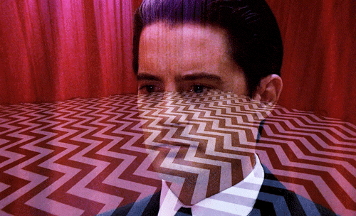
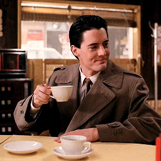
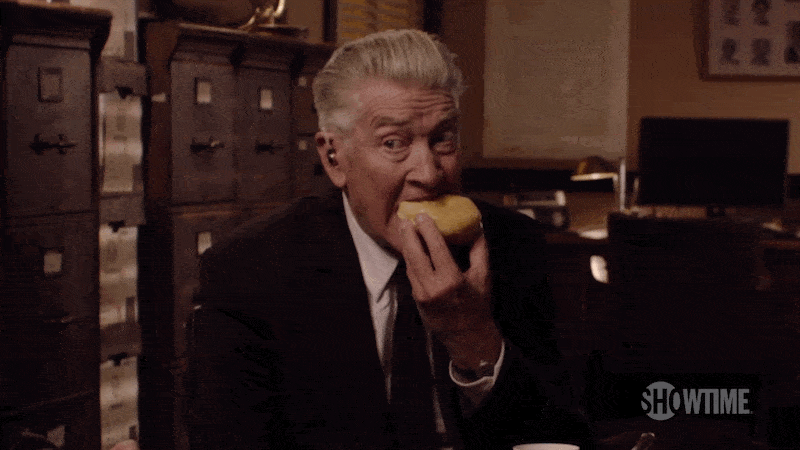
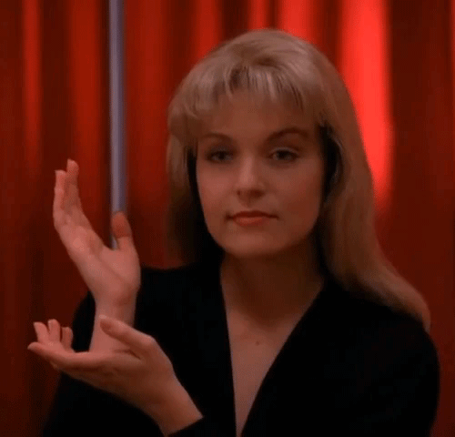
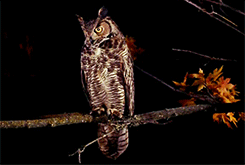
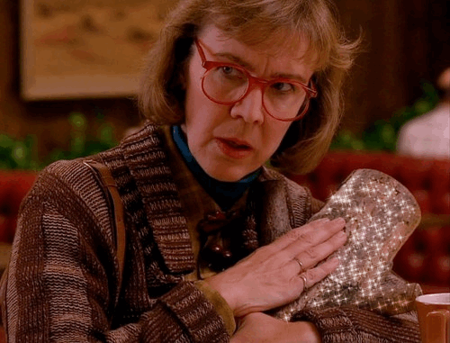
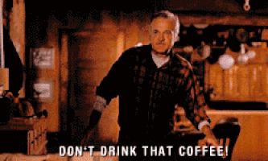

Совы, красная комната и кофе. 8 незабываемых символов «Твин Пикс»
Тихая музыка, птица на ветке, две горные вершины и мёртвая блондинка в полиэтилене — эти символы «Твин Пикс» безошибочно узнают не только его поклонники, но и те, кто в детстве ночью украдкой посматривал телевизор, и даже те, кто не видел сериал вовсе. Его создатель Дэвид Линч в своей фирменной манере наполнил бессмертный детектив множеством визуальных метафор, дополняющих и без того сложный и неоднозначный сюжет. Некоторые из них стали настолько меметичны, что просочились в современную культуру и цитируются без связи с первоисточником. Мы выбрали восемь самых запоминающихся символов «Твин Пикс» и попытались разобраться, что же хотел сказать мистер Линч (впрочем, мы вряд ли узнаем, что же он имел в виду на самом деле).
Красная комната

Броский интерьер Красной комнаты, пожалуй, самая популярная визуальная цитата из сериала. Красный — один из доминирующих цветов линчевской палитры. В мифологии «Твин Пикс» он связан со стихией огня, которая, в свою очередь, связана с миром тёмных духов. Именно поэтому стены приёмной Чёрного Вигвама, Красной комнаты, покрыты багровыми занавесями, а практически все персонажи, как-то связанные с тёмной стороной, злом или безумием, носят что-нибудь красное. Чёрно-белый пол Красной комнаты не только отсылает к другому детективу Линча, «Синему бархату», но и олицетворяет два мистических мира, добрый и злой, намекая на доппельгангеров, обитающих тут. Находящаяся здесь статуя Венеры Медицейской, согласно фанатским теориям, воплощает саму Лору Палмер, прекрасным призраком застывшую между миром живых и миром мёртвых.

Красные бархатные шторы, паркет с узором из чёрно-белых зигзагов и статуя Венеры вот уже 25 лет всплывают в самых разных произведениях мировой культуры — порой даже в тех, чья целевая аудитория в силу возраста вряд ли может понять отсылку.
Чертовски хороший кофе!.. И горячий!

Еда — это просто еда. Но иногда она совсем не то, чем кажется, — особенно если за дело берутся фанаты. На протяжении всего сериала агент Купер нахваливает кофе, чёрный как ночь, и все вокруг то и дело его варят и пьют. Считается, что кофе выражает суть самого агента Купера — всегда бодрого, обладающего ясным умом, готового к стремительным действиям. Так, кофе, застывший в чашке агента в Красной комнате, — это одновременно предостережение, насмешка и способ показать, что в мире духов правила Дейла Купера не действуют.
Ну и, разумеется, Дэвид Линч тоже очень любит кофе.
Пончики

Кажется, что полицейский участок Твин Пикс функционирует исключительно на пончиках. Герои собираются за столом, уставленным аппетитными круглыми пончиками, и камера нередко на них замирает. Такой акцент сделан не случайно. С одной стороны, эта выпечка считается стереотипным снеком копов, и их гипертрофированное количество призвано показать, как Хок, Шериф Трумен и Энди стараются справиться с большим и сложным делом. С другой стороны, пончики — юмористический элемент, придающий «Твин Пикс» сладковатый привкус старых ситкомов, отлично контрастирующий с тягучей атмосферой неведомого ужаса и зла, таящегося в ночном лесу.

Вишнёвый пирог

Знаменитый вишнёвый пирог, который подают в местном кафе RR Dine», — гимн уютной провинциальности… и скрытой сексуальности. Да, если кофе — это символ Агента Купера, то вишнёвый пирог и вишня — символы роковых красоток Твин Пикс, Лоры Палмер и Одри Хорн.

Кстати, знаменитый фокус с коктейльной вишенкой вошёл в историю именно благодаря сериалу, — так что если вас когда-нибудь попросят повторить его, знайте: во всём виновата Одри!
Жест Лоры Палмер

За все сезоны сериала мёртвая Лора Палмер несколько раз складывает руки в странный жест и говорит Куперу: «Тем временем» (Meanwhile). Насчёт жеста существует несколько версий. Самая популярная гласит, что это ведическая мудра (символический жест), означающая «бесстрашие». Другая версия — жест крадёт время Дейла Купера, запертого в Красной комнате, и перематывает время на 25 лет вперёд. Ещё одна догадка — Лора изображает, будто держит некий невидимый предмет — картину или вазу — или вовсе показывает, что спит на подушке.
Совы

Фраза «Совы не те, чем кажутся» разменяла третий десяток и прекрасно чувствует себя на демотиваторах в интернете и сувенирной продукции с совятами, никак не относящейся к творению Линча. Совы — один из центральных символов сериала, вокруг них концентрируется огромный пласт мифологии «Твин Пикс». Эти птицы — оборотни, предвестники смерти, посланцы иного мира и проводники. «Совиный» знак, которым навечно отмечен город и некоторые его жители, похож на петроглиф реального индейского племени Вишрам, обитавшего в штате Вашингтон (здесь снимали сериал). Предположительно петроглиф служил отметкой для рыболовных мест и защитой от монстров, живущих в водоёмах.

Её отец! Лора Палмер

Ответ на отнюдь не самый главный вопрос всего сериала быстро стал крылатой фразой на постсоветском пространстве и превратился в мем. Его часто используют, чтобы подшутить над теми, кто слишком агрессивно относится к спойлерам. Знание о том, кто убил Лору, совершенно ничего не меняет — в сериале важно совсем не это.
Полено

Если огонь в «Твин Пикс» — элемент зла и символ агрессивной стихии, то дерево олицетворяет мистические и магические силы — жуткие, но не обязательно злые. В лесах, где среди ночных стволов постоянно чувствуется чьё-то незримое присутствие, с персонажами происходят страшные и таинственные события. Вместе с тем Дама с поленом, получающая послания от куска дерева, явно старается помочь героям.
Рыба в кофейнике

Самый простой символ — никаких двойных смыслов! Этот юмористический момент был вдохновлён реальным случаем, произошедшим с Дэвидом Линчем. Как-то раз они с другом заказали кофе, и им принесли кофейник, в котором кто-то забыл кусок мыла. Линчу этот инцидент показался забавным, поэтому он вставил его в сериал, заменив мыло на рыбу — ведь Питт Мартелл заядлый рыбак. Правда, и здесь фанаты умудряются строить догадки, кто же подсунул рыбу в кофейник — Кэтрин Мартелл, Эндрю Пэккард, Джози или БОБ?